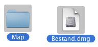
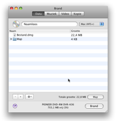
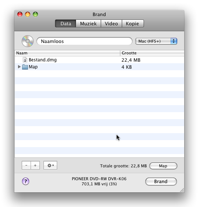
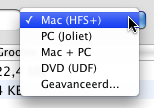

Data schijven branden:
Data schijven worden meestal gebruikt op computers. Er zijn verschillende data schijven, met elk zijn eigen nut. Brand kan de meest voor komende data schijven creëren.
1 Selecteer bestanden
Dit kan elk bestand of map zijn.

2 Sleep ze naar de lijst
Sleep de bestanden in de lijst. Om een enkele folder als
lay-out te gebruiken sleep je deze in de Data tab om de lijst heen.

 

3 Selecteer een bestandssysteem
Selecteer een bestandssysteem:
Mac (HFS+):
Kies dit bestandssysteem als u de schijven
alleen op Macs gebruikt. Windows kan dit bestandssysteem niet lezen.
PC (Joliet):
Dit bestandssysteem wordt het meeste
gebruikt voor CD's en kan gelezen worden met de meeste computers. Het
mag ook op DVD's gebruikt worden.
DVD (UDF):
Dit bestandssysteem wordt het meeste
gebruikt voor DVD's. Het kan worden gelezen door meeste moderne
computers (het werkt in ieder geval met Mac OS 9 of hoger en Windows 98
en hoger). Het mag ook op CD's worden gebruikt. (dit menu is niet
aanwezig in Panther)
Mac + PC:
Dit
is een mix van een Mac bestandssysteem + een PC bestandssysteem. Het
kan worden gelezen op bijna alle computers, maar de Mac specifieke
informatie blijft intact.
Geavanceerd:
Kies een combinatie van verschillende bestandsystemen.
Deze bevat de bovenstaande bestandssystemen, maar ook ISO 9660
(voorganger van joliet), HFS Standaard (voorganger van HFS+) en in
Panther (UDF / ISO 9660).

4 Klik op Brand
Hierdoor word een dialoog getoond.

5 Kies opties
Kies hier de voor de opties
tijdens het branden gebruikt moeten worden. Voor meer brand
instellingen
zie de "Voorkeuren" onder het Brand menu.

6 Brand de schijf
Klik op Brand om de schijf te branden.

7 Brand
gaat nu de schijf branden
Tijdens
het branden wordt een dialoog getoond met de voortgang.